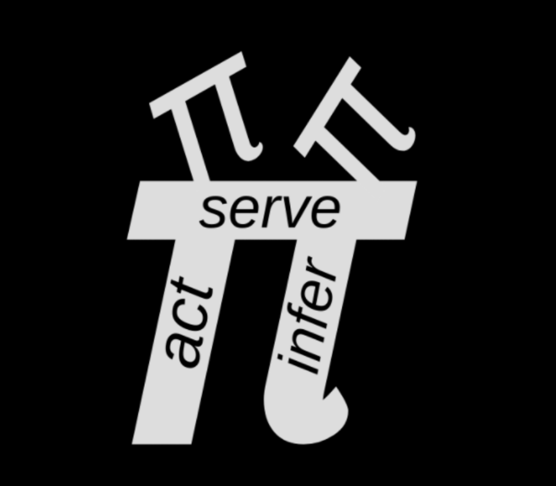

People
Externally visible public GitHub profile rows with public repository context.
Public open-source map
Structured public tables for externally visible people, public repositories, research links, ideas, and ontology relationships across the Active Inference Institute ecosystem.

On this page
Public link policy
These tables render public GitHub profiles, public repositories, verified research links, and public concept metadata only. Internal operational records and private working details are excluded.
Externally visible public GitHub profile rows with public repository context.
Public ActiveInferenceInstitute repositories with project family, type, language, stars, and updated date.
Concept, method, tool, value, and publication nodes from public-safe tech-tree metadata.
Directed relationships between public ideas, methods, values, tools, and applications.
Verified public research, paper, and reference links from the resource registry.
140 rows shown
People
Public GitHub profiles visible through public ActiveInferenceInstitute repository metadata.
8 people shown
| Public person | GitHub | Public basis | Visible repositories | Summary |
|---|---|---|---|---|
| Ana-Magdalena | @Ana-Magdalena | Public GitHub contributor | ActiveInferenceJournal | Public GitHub contributor visible on the ActiveInferenceJournal repository. |
| BazookamanPH | @BazookamanPH | Public GitHub contributor | ActiveInferenceJournal | Public GitHub contributor visible on the ActiveInferenceJournal repository. |
| Daniel Ari Friedman | @docxology | Public GitHub contributor | CEREBRUM, GeneralizedNotationNotation, GEO-INFER, institute_website | Public GitHub profile connected to multiple ActiveInferenceInstitute open-source repositories. |
| Holly Grimm | @hollygrimm | Public GitHub contributor | ActiveInferenceJournal | Public GitHub contributor visible on the ActiveInferenceJournal repository. |
| jeffschulman | @jeffschulman | Public GitHub contributor | ActiveInferenceJournal | Public GitHub contributor visible on the ActiveInferenceJournal repository. |
| mlflumic | @mlflumic | Public GitHub contributor | ActiveInferenceJournal | Public GitHub contributor visible on the ActiveInferenceJournal repository. |
| TheButtskie | @TheButtskie | Public GitHub contributor | ActiveInferenceJournal | Public GitHub contributor visible on the ActiveInferenceJournal repository. |
| turfus | @turfus | Public GitHub contributor | ActiveInferenceJournal | Public GitHub contributor visible on the ActiveInferenceJournal repository. |
Repositories
Open-source project rows derived from the public ActiveInferenceInstitute GitHub namespace.
52 repositories shown
| Repository | Family | Type | Language | Stars | Updated | Docs |
|---|---|---|---|---|---|---|
| ActiveInferenceJournal | Research and publications | Research/content repository | HTML | 43 | 2026-05-25 | Repository |
| ActiveBlockference | Open-source projects | Notebook repository | Jupyter Notebook | 33 | 2026-05-27 | Repository |
| ActiveInferAnts | Open-source projects | Code repository | Python | 29 | 2026-05-18 | Repository |
| GeneralizedNotationNotation | Open-source projects | Code repository | Pkl | 24 | 2026-05-25 | Repository |
| fundamentals | Learning and implementations | Code repository | Python | 19 | 2026-06-05 | Repository |
| cognitive | Open-source projects | Code repository | Python | 18 | 2026-03-09 | Repository |
| Active_Inference_Ontology | Research and publications | Project materials repository | Unspecified | 14 | 2026-05-18 | Repository |
| CEREBRUM | Research and publications | Code repository | Python | 13 | 2026-06-09 | Repository |
| Symposium | Open-source projects | Code repository | Python | 12 | 2026-03-18 | Open docs |
| GEO-INFER | Open-source projects | Documentation/site repository | HTML | 11 | 2026-05-26 | Repository |
| Journal-Utilities | Research and publications | Research/content repository | HTML | 11 | 2026-02-21 | Repository |
| ActiveInferenceCategoryTheory | Research and publications | Project materials repository | Unspecified | 10 | 2025-02-03 | Repository |
| courses | Learning and implementations | Documentation/site repository | HTML | 10 | 2026-05-18 | Repository |
| AEOS | Research and publications | Project materials repository | Unspecified | 8 | 2025-05-27 | Repository |
| Parr_et_al_2022_ActInf_Textbook | Learning and implementations | Code repository | Julia | 6 | 2024-07-24 | Repository |
| Research-Discovery-Engine | Research and publications | Documentation/site repository | HTML | 6 | 2025-12-15 | Repository |
| Biofirm | Open-source projects | Code repository | Python | 5 | 2025-06-15 | Repository |
| Knowledge-Engineering | Open-source projects | Notebook repository | Jupyter Notebook | 5 | 2026-05-29 | Repository |
| Start | Learning and implementations | Code repository | Python | 5 | 2026-01-19 | Open docs |
| act_inf_metaanalysis | Research and publications | Research/content repository | TeX | 4 | 2026-05-04 | Repository |
| fep_lean | Research and publications | Code repository | Python | 3 | 2026-04-27 | Repository |
| ActInf_RxInfer | Learning and implementations | Project materials repository | Unspecified | 2 | 2025-04-03 | Open docs |
| pymcp | Learning and implementations | Code repository | Python | 2 | 2025-07-28 | Repository |
| pymdp | Learning and implementations | Code repository | Python | 2 | 2024-11-09 | Repository |
| FEP_Active_Inference_Papers | Research and publications | Project materials repository | Unspecified | 1 | 2025-11-02 | Repository |
| GEN24 | Open-source projects | Notebook repository | Jupyter Notebook | 1 | 2024-10-27 | Repository |
| NoOrg | Open-source projects | Documentation/site repository | HTML | 1 | 2026-01-31 | Repository |
| policy_entanglement | Open-source projects | Code repository | Python | 1 | 2026-05-30 | Repository |
| ultralink | Open-source projects | Project materials repository | Unspecified | 1 | 2025-03-11 | Repository |
| A2A | Open-source projects | Project materials repository | Unspecified | 0 | 2025-06-23 | Repository |
| action-oriented | Learning and implementations | Project materials repository | Unspecified | 0 | 2021-08-29 | Repository |
| ActiveInferenceImplementations | Learning and implementations | Notebook repository | Jupyter Notebook | 0 | 2024-09-21 | Repository |
| aii-org | Public web infrastructure | Documentation/site repository | HTML | 0 | 2026-04-04 | Repository |
| ants | Open-source projects | Project materials repository | Unspecified | 0 | 2021-08-29 | Repository |
| ATLAS | Open-source projects | Project materials repository | Unspecified | 0 | 2024-08-21 | Repository |
| Bots | Open-source projects | Project materials repository | Unspecified | 0 | 2022-12-31 | Repository |
| DeepActiveInference | Research and publications | Project materials repository | Unspecified | 0 | 2021-08-29 | Repository |
| entropix | Open-source projects | Project materials repository | Unspecified | 0 | 2024-10-07 | Repository |
| fabric | Research and publications | Code repository | Go | 0 | 2024-10-03 | Repository |
| FEPS | Research and publications | Project materials repository | Unspecified | 0 | 2025-01-14 | Repository |
| Flowise | Open-source projects | Project materials repository | Unspecified | 0 | 2024-11-02 | Repository |
| Garden-of-Iris | Open-source projects | Project materials repository | Unspecified | 0 | 2023-04-15 | Repository |
| gen25 | Open-source projects | Project materials repository | Unspecified | 0 | 2025-03-14 | Repository |
| generative_agents | Open-source projects | Project materials repository | Unspecified | 0 | 2023-08-15 | Repository |
| Genesis | Learning and implementations | Project materials repository | Unspecified | 0 | 2025-03-10 | Repository |
| gnn | Open-source projects | Project materials repository | Unspecified | 0 | 2025-05-13 | Repository |
| institute_website | Public web infrastructure | Documentation/site repository | HTML | 0 | 2026-06-09 | Repository |
| ISSS | Open-source projects | Code repository | Python | 0 | 2024-03-22 | Repository |
| jock-lang | Open-source projects | Project materials repository | Unspecified | 0 | 2026-06-08 | Repository |
| metta | Learning and implementations | Project materials repository | Unspecified | 0 | 2024-10-23 | Repository |
| rl-inference | Learning and implementations | Project materials repository | Unspecified | 0 | 2021-08-29 | Repository |
| topp | Research and publications | Project materials repository | Unspecified | 0 | 2025-05-19 | Repository |
Ideas
Deduplicated concepts, methods, tools, values, and applications from the public-safe concept graph.
30 ideas shown
| Idea | Type | Maturity | Summary | Tags | Tree |
|---|---|---|---|---|---|
| Action as Active Inference | Application | Established | Action as the process of changing the world to fulfill predictions, minimizing free energy by acting on the environment rather than updating beliefs. | action, embodied, motor | Active Inference |
| Learning as Model Update | Application | Established | Learning as the slow update of generative model parameters to minimize long-term free energy, encompassing synaptic plasticity and structure learning. | learning, model-update, plasticity | Active Inference |
| Perception as Inference | Application | Established | Perception understood as Bayesian inference — updating internal generative models to explain away prediction errors from sensory input. | inference, perception, sensory | Active Inference |
| Active Inference | Concept | Established | The process theory derived from the Free Energy Principle: agents act to fulfill predictions and minimize expected free energy through perception and action. | active-inference, process-theory | Active Inference |
| Allostasis | Concept | Advanced | Predictive homeostasis — anticipatory regulation that adjusts setpoints based on expected future demands rather than reacting to deviations. | anticipatory, predictive, regulation | Free Energy Principle |
| Autopoiesis | Concept | Established | Self-producing systems as defined by Maturana and Varela — living systems that continuously produce and maintain themselves. | maturana, self-production, varela | Free Energy Principle |
| Entropy | Concept | Established | A measure of uncertainty or disorder in a probability distribution, connecting information theory to thermodynamics. | disorder, entropy, uncertainty | Free Energy Principle |
| Expected Free Energy | Concept | Established | The objective function for policy selection in active inference, combining epistemic (information-seeking) and pragmatic (goal-seeking) drives. | efe, epistemic, policy-selection, pragmatic | Active Inference |
| Free Energy Principle | Concept | Established | Karl Friston's unifying theory proposing that all adaptive systems minimize variational free energy to maintain their structural and functional integrity. | fep, friston, variational | Active Inference |
| Free Energy Principle (Core) | Concept | Established | The core statement: any system that persists must minimize variational free energy, an upper bound on surprisal, through perception and action. | core, fep, variational | Free Energy Principle |
| Generative Models | Concept | Established | Probabilistic models specifying how observed data is generated from latent causes, central to both inference and learning under the FEP. | generative, latent, probabilistic | Active Inference |
| Homeostasis | Concept | Established | The maintenance of biological stability through regulatory feedback — keeping internal variables within viable bounds. | biological, regulation, stability | Free Energy Principle |
| Markov Blankets | Concept | Established | Statistical boundaries that separate internal states from external states, defining the interface through which a system interacts with its environment. | boundary, markov-blanket, pearl | Active Inference |
| Perception-Action Loop | Concept | Established | The bidirectional sensorimotor cycle through which agents continuously update beliefs (perception) and act on the world (action). | embodied, loop, sensorimotor | Free Energy Principle |
| Precision Weighting | Concept | Established | Attention as the optimization of precision (inverse variance) on prediction errors, modulating the influence of sensory vs. prior information. | attention, precision, prediction-error | Active Inference |
| Predictive Processing | Concept | Established | The brain as a prediction machine — Helmholtz, Clark, and Friston's framework where perception is hypothesis testing against sensory input. | clark, helmholtz, prediction | Active Inference |
| Self-Organization | Concept | Established | The emergence of order and structure without external direction, explained under FEP as free energy minimization at the system level. | complexity, emergence, order | Free Energy Principle |
| Surprise Minimization | Concept | Established | The principle that adaptive systems minimize surprisal (negative log-evidence) to maintain their existence within expected states. | log-evidence, surprisal, surprise | Free Energy Principle |
| Bayesian Inference | Method | Established | Inference via Bayes' theorem — updating prior beliefs with likelihoods from observed data to obtain posterior distributions. | bayes, posterior, prior | Free Energy Principle |
| Policy Selection | Method | Established | Action selection via minimization of expected free energy over candidate policies, balancing exploration and exploitation. | action, decision, policy | Active Inference |
| Variational Bayes | Method | Established | Approximate Bayesian inference via optimization of the evidence lower bound (ELBO), converting intractable integration into tractable optimization. | bayes, elbo, variational | Active Inference |
| Karl Friston | Person | Established | Originator of the Free Energy Principle and Active Inference framework; Professor at University College London. | friston, neuroscience, ucl | Active Inference |
| Consciousness Theories | Research Area | Emerging | Higher-order and global cognitive access theories of consciousness, explored through the lens of free energy minimization and self-modeling. | consciousness, global-access, higher-order | Free Energy Principle |
| Information Theory | Research Area | Established | Shannon entropy and mutual information — the mathematical foundations for quantifying uncertainty and information content. | entropy, information, shannon | Free Energy Principle |
| Statistical Mechanics | Research Area | Established | The thermodynamics of many-particle systems, providing the formalism for free energy, partition functions, and ensemble behavior. | boltzmann, gibbs, thermodynamics | Free Energy Principle |
| RxInfer.jl | Tool | Emerging | Julia-based reactive message passing library for scalable Bayesian inference and active inference agent design. | julia, message-passing, reactive | Active Inference |
| pymdp | Tool | Emerging | Python library for simulating active inference agents using partially observable Markov decision processes (POMDPs). | pomdp, python, simulation | Active Inference |
| Accessibility | Value | Established | Institute value: making Active Inference Institute research and education accessible to diverse global communities. | accessibility, institute, value | Active Inference |
| Real-World Applicability | Value | Established | Institute value: ensuring research translates into real-world applications that benefit individuals and communities. | applicability, institute, value | Active Inference |
| Scientific Rigor | Value | Established | Institute value: maintaining high standards of scientific rigor in all research and educational outputs. | institute, rigor, value | Active Inference |
Ontology
Directed relationships from the Active Inference and Free Energy Principle tech trees.
33 relationships shown
| Relationship | Tree | From | Relation | To | Maturity |
|---|---|---|---|---|---|
| Accessibility -> Active Inference | Active Inference | Accessibility | governs | Active Inference | Established -> Established |
| Active Inference -> Action as Active Inference | Active Inference | Active Inference | explains | Action as Active Inference | Established -> Established |
| Active Inference -> Expected Free Energy | Active Inference | Active Inference | includes | Expected Free Energy | Established -> Established |
| Active Inference -> Learning as Model Update | Active Inference | Active Inference | explains | Learning as Model Update | Established -> Established |
| Active Inference -> Perception as Inference | Active Inference | Active Inference | explains | Perception as Inference | Established -> Established |
| Active Inference -> Precision Weighting | Active Inference | Active Inference | includes | Precision Weighting | Established -> Established |
| Expected Free Energy -> Policy Selection | Active Inference | Expected Free Energy | enables | Policy Selection | Established -> Established |
| Free Energy Principle -> Active Inference | Active Inference | Free Energy Principle | grounds | Active Inference | Established -> Established |
| Free Energy Principle -> Generative Models | Active Inference | Free Energy Principle | requires | Generative Models | Established -> Established |
| Free Energy Principle -> Markov Blankets | Active Inference | Free Energy Principle | defines boundary via | Markov Blankets | Established -> Established |
| Free Energy Principle -> Variational Bayes | Active Inference | Free Energy Principle | implemented via | Variational Bayes | Established -> Established |
| Karl Friston -> Free Energy Principle | Active Inference | Karl Friston | originated | Free Energy Principle | Established -> Established |
| Markov Blankets -> Generative Models | Active Inference | Markov Blankets | prerequisite for | Generative Models | Established -> Established |
| Predictive Processing -> Free Energy Principle | Active Inference | Predictive Processing | extends | Free Energy Principle | Established -> Established |
| Real-World Applicability -> Action as Active Inference | Active Inference | Real-World Applicability | governs | Action as Active Inference | Established -> Established |
| Real-World Applicability -> Perception as Inference | Active Inference | Real-World Applicability | governs | Perception as Inference | Established -> Established |
| RxInfer.jl -> Active Inference | Active Inference | RxInfer.jl | implements | Active Inference | Emerging -> Established |
| Scientific Rigor -> Free Energy Principle | Active Inference | Scientific Rigor | governs | Free Energy Principle | Established -> Established |
| Variational Bayes -> Generative Models | Active Inference | Variational Bayes | prerequisite for | Generative Models | Established -> Established |
| pymdp -> Active Inference | Active Inference | pymdp | implements | Active Inference | Emerging -> Established |
| Allostasis -> Homeostasis | Free Energy Principle | Allostasis | extends | Homeostasis | Advanced -> Established |
| Autopoiesis -> Self-Organization | Free Energy Principle | Autopoiesis | related to | Self-Organization | Established -> Established |
| Bayesian Inference -> Entropy | Free Energy Principle | Bayesian Inference | prerequisite for | Entropy | Established -> Established |
| Bayesian Inference -> Free Energy Principle (Core) | Free Energy Principle | Bayesian Inference | implements | Free Energy Principle (Core) | Established -> Established |
| Entropy -> Surprise Minimization | Free Energy Principle | Entropy | prerequisite for | Surprise Minimization | Established -> Established |
| Free Energy Principle (Core) -> Consciousness Theories | Free Energy Principle | Free Energy Principle (Core) | applies to | Consciousness Theories | Established -> Emerging |
| Free Energy Principle (Core) -> Homeostasis | Free Energy Principle | Free Energy Principle (Core) | applies to | Homeostasis | Established -> Established |
| Free Energy Principle (Core) -> Self-Organization | Free Energy Principle | Free Energy Principle (Core) | explains | Self-Organization | Established -> Established |
| Information Theory -> Entropy | Free Energy Principle | Information Theory | defines | Entropy | Established -> Established |
| Information Theory -> Free Energy Principle (Core) | Free Energy Principle | Information Theory | foundations of | Free Energy Principle (Core) | Established -> Established |
| Perception-Action Loop -> Free Energy Principle (Core) | Free Energy Principle | Perception-Action Loop | core mechanism of | Free Energy Principle (Core) | Established -> Established |
| Statistical Mechanics -> Free Energy Principle (Core) | Free Energy Principle | Statistical Mechanics | foundations of | Free Energy Principle (Core) | Established -> Established |
| Surprise Minimization -> Free Energy Principle (Core) | Free Energy Principle | Surprise Minimization | instantiates | Free Energy Principle (Core) | Established -> Established |
Research
Verified public research, paper, and reference links surfaced from the resource registry.
17 research links shown
| Research link | Group | Audience | Summary | Tags |
|---|---|---|---|---|
| Ecosystem shortlink | Research | Researcher | Public ecosystem shortlink for Institute context, projects, activities, and conceptual maps. | research, ecosystem |
| Active Inference Journal repository | Research | Researcher | Research and publication-oriented repository for the Active Inference Journal. | research, journal |
| Active Inference Ontology shortlink | Research | Researcher | Public Active Inference Ontology shortlink for shared conceptual infrastructure. | ontology, research, knowledge |
| FEP and Active Inference papers repository | Research | Researcher | External paper repository surfaced from the official research page. | papers, research, fep |
| Ramstead Active Inference precis | Research | Researcher | Reachable arXiv reference surfaced from the official research page. | arxiv, research, active-inference |
| Active Inference foundations arXiv reference | Research | Researcher | Reachable arXiv reference surfaced from the official research page. | arxiv, research, foundations |
| Zenodo research record 4021163 | Research | Researcher | Reachable Zenodo research reference surfaced from the official research page. | zenodo, research |
| Zenodo research record 5573287 | Research | Researcher | Reachable Zenodo research reference surfaced from the official research page. | zenodo, research |
| Zenodo research record 5759807 | Research | Researcher | Reachable Zenodo research reference surfaced from the official research page. | zenodo, research |
| Zenodo research record 5797041 | Research | Researcher | Reachable Zenodo research reference surfaced from the official research page. | zenodo, research |
| Zenodo research record 7377256 | Research | Researcher | Reachable Zenodo research reference surfaced from the official research page. | zenodo, research |
| Zenodo research record 7443848 | Research | Researcher | Reachable Zenodo research reference surfaced from the official research page. | zenodo, research |
| Zenodo research record 7449368 | Research | Researcher | Reachable Zenodo research reference surfaced from the official research page. | zenodo, research |
| Zenodo research record 7484994 | Research | Researcher | Reachable Zenodo research reference surfaced from the official research page. | zenodo, research |
| Zenodo research record 7803328 | Research | Researcher | Reachable Zenodo research reference surfaced from the official research page. | zenodo, research |
| Zenodo research record 8164667 | Research | Researcher | Reachable Zenodo research reference surfaced from the official research page. | zenodo, research |
| Zenodo research record 8266281 | Research | Researcher | Reachable Zenodo research reference surfaced from the official research page. | zenodo, research |